Grenzenlose Zukunft:
Aachen kann mehr.
Viel mehr als es zeigt.
Und deutlich mehr, als wir nutzen.
Wer so viel Substanz hat, trägt auch Verantwortung.
Für heute. Und für die nächste Generation.
Starke Standorte entstehen nicht zufällig.
Sie werden nicht nur „gebaut“.
Sie werden als Lebens- und Arbeitsraum wahrgenommen, bewertet und eingeordnet.
Andere wissen längst: Im Wettbewerb um Talente, Kapital und Ideen gewinnt nicht der Lauteste. Sondern der Klarste in Sachen „Haltung und Vision“. Wer seine Geschichten nicht selbst erzählt, überlässt sie anderen.
Aachen ist ein Möglichkeitsraum.
Aachen ist stark.
Zeit, dass
die Welt davon erfährt.
Wissenschaft
Industrie
Handwerk
Technologie
Über 800 Jahre Geschichte
Dreiländereck
Aachen kann vieles. Und etwas Entscheidendes besonders gut.
Wissenschaft
Industrie
Handwerk
Technologie
Über 800 Jahre Geschichte
Dreiländereck
... das alles beschreibt aber nicht unsere eigentliche DNA.
In einer Region voller Grenzen, mit einer Zukunft voller Möglichkeiten zeigt sich
klar, was Zukunft wirklich braucht:
Die Fähigkeit, Grenzen nicht hinzunehmen
– sondern zu verschieben oder zu transformieren.
Aachen ist kein Ort, der sich nur durch Karl dem Großen, Dom und Printen erklärt.
Aachen ist mehr als ein Ort: neugierig, grenzüberschreitend, zukunftsorientiert. Und das
verdient Sichtbarkeit.
Es ist ein neues Mindset.
Wir lassen uns nicht von Grenzen oder Limits definieren. Grenzgängertum und Möglichmachen sind unsere DNA. Schluss mit KleinKlein und falscher Bescheidenheit.
Wir erzählen die echten Geschichten dieser Region – klar, selbstbewusst und mit Stolz. Und wo wir an Limits stoßen, denken wir darüber hinaus.
Place Branding Aachen e.V.
Unser Verein entwickelt und trägt als unternehmerische Initiative eine strategisch wirksame Standortmarke. Unter einem gemeinsamen Markendach bündeln wir die Themen, die Aachen heute und morgen prägen.
Unser Ziel: Keine Kampagne auf Zeit.
Sondern eine dauerhafte Infrastruktur der Sichtbarkeit und Wirkung.
Wir nennen es: Aachen ohne Limits.
Kein Projekt. Keine Einzelaktion. Kein Stadtmarketing.
Sondern ein gemeinsamer Rahmen für Themen, die zusammen größer sind als einzelne Akteure und zu relevant, um sie zerfasert und isoliert zu erzählen.
Nicht nebeneinander.
Sondern unter einem Dach, das Haltung bündelt – und Wirkung erzeugt.
Getragen von allen, denen „Aachen“ am Herzen liegt.
Hinter „AACHEN OHNE LIMITS“ stehen keine Apparate.
Sondern Menschen, die Verantwortung übernehmen wollen.
Aus Überzeugung – nicht aus Pflicht.
Organisiert im Place Branding Aachen e.V.
Wirtschaft, Wissenschaft und eine engagierte
Stadtgesellschaft.
Eigeninitiativ. Unabhängig. Gemeinsam.
Strategisch entwickelt mit engagierten Pilotunternehmen:

Unterstützt von starken Partnern:
Gerade heute gilt: Zukunft geht uns alle an.
Starke Standorte zu gestalten ist nicht abstrakt.
Sie entstehen dort, wo Verantwortung übernommen wird –
für ihr Umfeld, ihre Mitarbeitenden und – was uns besonders am Herzen liegt – die nächste
Generation.
Nicht als kurzfristiger Marketingeffekt. Sondern als strategischer Vorteil.
Unsere Überzeugung:
Wer hier erfolgreich ist, profitiert vom Standort – und kann auch zu seiner zukünftigen Stärke
beitragen.
Nicht aus Pflicht. Sondern aus strategischer Weitsicht.
Das funktioniert nur gemeinsam.
AACHEN OHNE LIMITS ist bewusst als offene Initiative angelegt.
Nicht als fertige Lösung. Nicht als geschlossenes System.
In der aktuellen Phase geht es nicht um Pakete oder Verpflichtungen.
Sondern um die Frage: Schaffen wir das gemeinsam?
Ich unterstütze Aachen ohne Limits.
Keine Verpflichtung.
Sondern Information, Austausch und Einladung zur weiteren Mitgestaltung.
Verantwortung braucht eine tragfähige Struktur.
AACHEN OHNE LIMITS ist eine am Gemeinwohl ausgerichtete Standortinitiative.
Mit dem Anspruch, Aachens Stärken langfristig sichtbar zu machen – nach innen wie so weit wie
möglich nach außen.
Organisiert im Place Branding Aachen e.V, inhaltlich und strategisch entwickelt gemeinsam mit
engagierten Unternehmen und Akteuren der Aachen Area.
Im Schulterschluss mit Stadt und Städteregion begleitend und unterstützend in diesem Prozess – nicht
führend.
Eine eigenständige, tragfähige Struktur, die von vielen getragen wird.